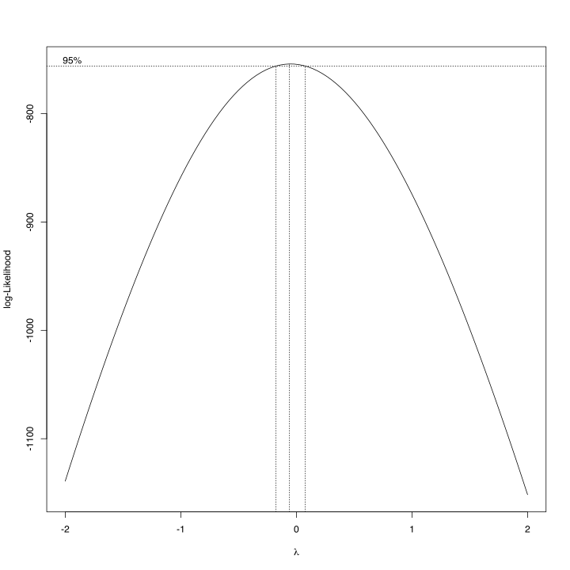

using AlgebraOfGraphics
using Arrow
using CairoMakie # graphics back-end
using CategoricalArrays
using Chain
using DataFrames
using DataFrameMacros # simplified dplyr-like data wrangling
using KernelDensity # density estimation
using MixedModels
using MixedModelsMakie # diagnostic plots
if contains(first(Sys.cpu_info()).model, "Intel")
using MKL # faster LAPACK on Intel processors
end
using ProgressMeter
using Random # random number generators
using RCall # call R from Julia
using StatsBase
using StatsModels
ProgressMeter.ijulia_behavior(:clear);
CairoMakie.activate!(; type="svg");Monica Vanoncini: Cardiac Synchrony and its Role in Language Development
RePsychLing in SMLP2022
1 Background
1.1 Task 1: Cardiac synchrony
MV: This is part of my PhD project which examines the role of mother-infant interpersonal synchrony on language development. Specifically, in this script, I test the following RQ. Does mother-infant cardiac synchrony predict infants’ word segmentation ability? We include data of 29 dyads who performed two different tasks:
word-segmentation task: infants underwent an eye-tracking task. During the familiarization phase they were listening to a story containing target words (i.e., familiar words). Then, they were tested with familiar (6 trials) and novel (6 trials) words. We measured their looking time (LT) in msec while listening to novel vs. familiar words. LT was our dependent variable.
5-minutes free play interaction: mothers were asked to play with the baby as they would do at home. During this time we recorded dual ECG. We then followed the following processing steps:
- We extracted offline Interbeat-intervals (IBIs)
- We calculated Respiratory Sinus Arrhythmia (RSA)
- to collect a more continuous measure of RSA, a sliding window of 15 s was used to extract a continuous estimate of cardiac vagal tone for both participants
- to identify coupling/synchrony between mothers’ and infants’ RSA time-series we used cross-recurrence quantification analysis (CRQA)
- CRQA gave us a bunch of metrics: RR, det, NRLINE, maxline, entropy, lam, TT
- we ran principal component analysis and we decide to include the first two components (pc1 and pc2), which had eigenvalues higher than 1 (Kaiser Rule).
2 Setup
dat = DataFrame(Arrow.Table("./data/Vanoncini_lang_ECG.arrow"));
# transfromations using DataFrameMacros
@transform!(dat, :Fam = @bycol categorical(:Fam));
@transform!(dat, :llt = log(:lt));
@transform!(dat, "{}_c" = @bycol ({r"^pc"} .- mean({r"^pc"})));
describe(dat)
# last line is shortcut for:
#@transform!(dat, :pc1_c = @bycol (:pc1 .- mean(:pc1)));
#@transform!(dat, :pc2_c = @bycol (:pc2 .- mean(:pc2)));
#@transform!(dat, :pc3_c = @bycol (:pc3 .- mean(:pc3)));
# Alternative: transformations using DataFrames
#transform!(dat, :Fam => categorical => :Fam,
# :lt => (x -> log.(x)) => :llt);10 rows × 7 columns
| variable | mean | min | median | max | nmissing | eltype | |
|---|---|---|---|---|---|---|---|
| Symbol | Union… | Any | Union… | Any | Int64 | Type | |
| 1 | Subj | S10 | S89 | 0 | Union{Missing, String} | ||
| 2 | Fam | familiar | novel | 0 | Union{Missing, CategoricalValue{String, UInt32}} | ||
| 3 | pc1 | -0.030805 | -4.82474 | -0.289949 | 5.38494 | 0 | Union{Missing, Float64} |
| 4 | pc2 | 0.019548 | -2.19475 | 0.0516131 | 2.03139 | 0 | Union{Missing, Float64} |
| 5 | pc3 | 0.0393816 | -2.25027 | 0.209453 | 1.4001 | 0 | Union{Missing, Float64} |
| 6 | lt | 7.89293 | 1.059 | 5.9375 | 31.696 | 0 | Union{Missing, Float64} |
| 7 | llt | 1.77351 | 0.0573251 | 1.78125 | 3.45619 | 0 | Float64 |
| 8 | pc1_c | -5.15717e-16 | -4.79393 | -0.259144 | 5.41574 | 0 | Float64 |
| 9 | pc2_c | 4.18303e-16 | -2.2143 | 0.0320651 | 2.01184 | 0 | Float64 |
| 10 | pc3_c | -1.43255e-16 | -2.28965 | 0.170071 | 1.36072 | 0 | Float64 |
3 Further preprocessing with R
RCall.ijulia_setdevice(MIME("image/svg+xml"); width=10, height=10.0)
@rput dat;
#R"summary(dat)"
R"""
suppressWarnings(suppressMessages(library(tidyverse)))
MASS::boxcox(lt ~ 1 + Fam + Subj, data=dat)
""";
4 Linear mixed models
4.1 Contrasts
contrasts = merge(
Dict(:Fam => EffectsCoding(base= "familiar"; levels=["familiar", "novel"])),
Dict(:Subj => Grouping())
);4.2 LMM analysis
m_pc0 = let
form = @formula(llt ~ 1 + Fam + (1 | Subj));
fit(MixedModel, form, dat; contrasts);
endMinimizing 18 Time: 0:00:00 ( 9.75 ms/it)| Est. | SE | z | p | σ_Subj | |
|---|---|---|---|---|---|
| (Intercept) | 1.7680 | 0.0777 | 22.74 | <1e-99 | 0.3620 |
| Fam: novel | 0.0259 | 0.0388 | 0.67 | 0.5052 | |
| Residual | 0.6807 |
m_pc1 = let
form = @formula(llt ~ 1 + Fam*pc1_c + (1 | Subj));
fit(MixedModel, form, dat; contrasts);
end| Est. | SE | z | p | σ_Subj | |
|---|---|---|---|---|---|
| (Intercept) | 1.7678 | 0.0776 | 22.78 | <1e-99 | 0.3611 |
| Fam: novel | 0.0260 | 0.0388 | 0.67 | 0.5038 | |
| pc1_c | 0.0121 | 0.0379 | 0.32 | 0.7500 | |
| Fam: novel & pc1_c | 0.0007 | 0.0187 | 0.04 | 0.9687 | |
| Residual | 0.6807 |
m_pc2 = let
form = @formula(llt ~ 1 + Fam*(pc1_c + pc2_c) + (1 | Subj));
fit(MixedModel, form, dat; contrasts);
end| Est. | SE | z | p | σ_Subj | |
|---|---|---|---|---|---|
| (Intercept) | 1.7647 | 0.0769 | 22.95 | <1e-99 | 0.3578 |
| Fam: novel | 0.0256 | 0.0385 | 0.66 | 0.5065 | |
| pc1_c | 0.0131 | 0.0376 | 0.35 | 0.7275 | |
| pc2_c | -0.0589 | 0.0744 | -0.79 | 0.4284 | |
| Fam: novel & pc1_c | 0.0016 | 0.0185 | 0.09 | 0.9299 | |
| Fam: novel & pc2_c | -0.0871 | 0.0375 | -2.33 | 0.0200 | |
| Residual | 0.6743 |
m_pc3 = let
form = @formula(llt ~ 1 + Fam*(pc1_c + pc2_c + pc3_c) + (1 | Subj));
fit(MixedModel, form, dat; contrasts);
end| Est. | SE | z | p | σ_Subj | |
|---|---|---|---|---|---|
| (Intercept) | 1.7640 | 0.0769 | 22.94 | <1e-99 | 0.3576 |
| Fam: novel | 0.0255 | 0.0385 | 0.66 | 0.5079 | |
| pc1_c | 0.0132 | 0.0375 | 0.35 | 0.7254 | |
| pc2_c | -0.0591 | 0.0744 | -0.79 | 0.4268 | |
| pc3_c | -0.0069 | 0.0932 | -0.07 | 0.9414 | |
| Fam: novel & pc1_c | 0.0014 | 0.0185 | 0.08 | 0.9377 | |
| Fam: novel & pc2_c | -0.0869 | 0.0374 | -2.32 | 0.0203 | |
| Fam: novel & pc3_c | 0.0245 | 0.0470 | 0.52 | 0.6031 | |
| Residual | 0.6740 |
5 Compare models
display(lrtest(m_pc0, m_pc1, m_pc2, m_pc3))
lrtest(m_pc0, m_pc3)Likelihood-ratio test: 4 models fitted on 310 observations
──────────────────────────────────────────────────────
DOF ΔDOF LogLik Deviance Chisq p(>Chisq)
──────────────────────────────────────────────────────
[1] 4 -340.7226 681.4453
[2] 6 2 -340.6712 681.3424 0.1029 0.9498
[3] 8 2 -337.7311 675.4622 5.8801 0.0529
[4] 10 2 -337.5917 675.1834 0.2789 0.8699
──────────────────────────────────────────────────────Likelihood-ratio test: 2 models fitted on 310 observations
──────────────────────────────────────────────────────
DOF ΔDOF LogLik Deviance Chisq p(>Chisq)
──────────────────────────────────────────────────────
[1] 4 -340.7226 681.4453
[2] 10 6 -337.5917 675.1834 6.2619 0.3945
──────────────────────────────────────────────────────MixedModels.likelihoodratiotest(m_pc0, m_pc1, m_pc2, m_pc3)| model-dof | deviance | χ² | χ²-dof | P(>χ²) | |
|---|---|---|---|---|---|
| llt ~ 1 + Fam + (1 | Subj) | 4 | 681 | |||
| llt ~ 1 + Fam + pc1_c + Fam & pc1_c + (1 | Subj) | 6 | 681 | 0 | 2 | 0.9498 |
| llt ~ 1 + Fam + pc1_c + pc2_c + Fam & pc1_c + Fam & pc2_c + (1 | Subj) | 8 | 675 | 6 | 2 | 0.0529 |
| llt ~ 1 + Fam + pc1_c + pc2_c + pc3_c + Fam & pc1_c + Fam & pc2_c + Fam & pc3_c + (1 | Subj) | 10 | 675 | 0 | 2 | 0.8699 |
let mods = [m_pc0, m_pc1, m_pc2, m_pc3];
DataFrame(;
model=[:m_pc0, :m_pc1, :m_pc2, :m_pc3],
pars=dof.(mods),
geomdof=round.(Int, (sum ∘ leverage).(mods)),
AIC=round.(Int, aic.(mods)),
AICc=round.(Int, aicc.(mods)),
BIC=round.(Int, bic.(mods)),
)
end4 rows × 6 columns
| model | pars | geomdof | AIC | AICc | BIC | |
|---|---|---|---|---|---|---|
| Symbol | Int64 | Int64 | Int64 | Int64 | Int64 | |
| 1 | m_pc0 | 4 | 23 | 689 | 690 | 704 |
| 2 | m_pc1 | 6 | 24 | 693 | 694 | 716 |
| 3 | m_pc2 | 8 | 25 | 691 | 692 | 721 |
| 4 | m_pc3 | 10 | 27 | 695 | 696 | 733 |
Not much evidence for the relevance of the principal-component predictors.
6 Appendix
versioninfo()Julia Version 1.8.0
Commit 5544a0fab76 (2022-08-17 13:38 UTC)
Platform Info:
OS: macOS (arm64-apple-darwin21.3.0)
CPU: 10 × Apple M1 Max
WORD_SIZE: 64
LIBM: libopenlibm
LLVM: libLLVM-13.0.1 (ORCJIT, apple-m1)
Threads: 1 on 8 virtual cores